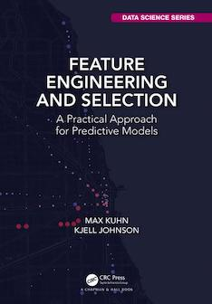

A primary goal of predictive modeling is to find a reliable and effective predictive relationship between an available set of features and an outcome. This book provides an extensive set of techniques for uncovering effective representations of the features for modeling the outcome and for finding an optimal subset of features to improve a model’s predictive performance.
An HTML version of this text can be found at https://bookdown.org/max/FES.
The data sets and R code are available in the GitHub repository https://github.com/topepo/FES.
The physical copies are sold by Amazon and Taylor & Francis.